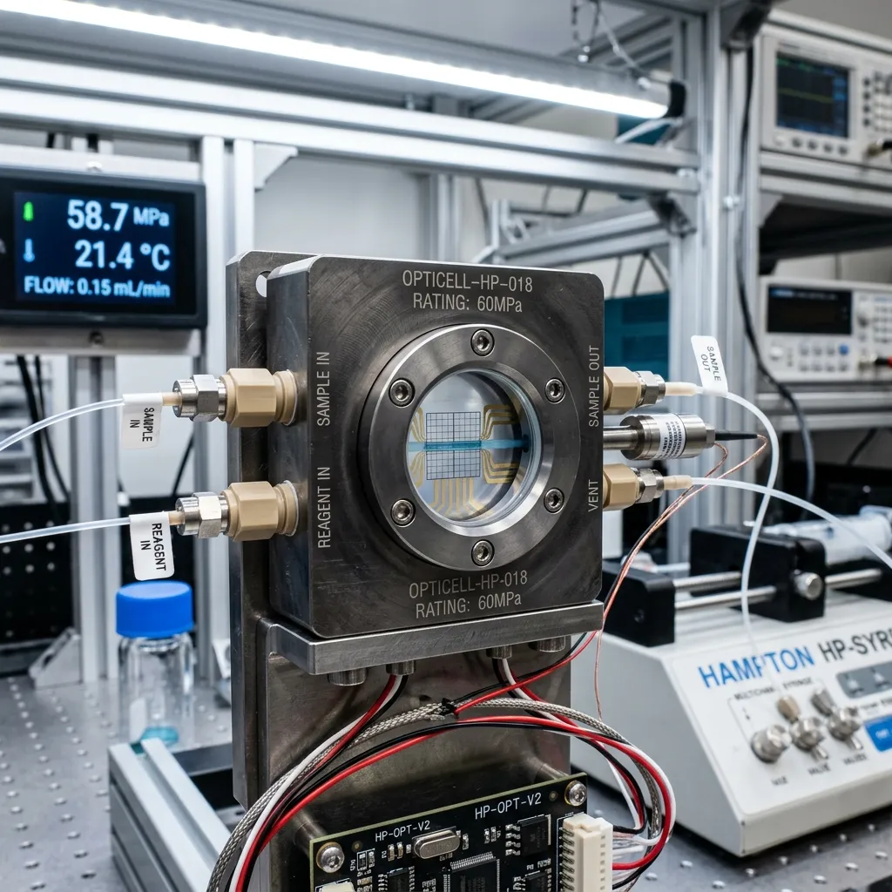
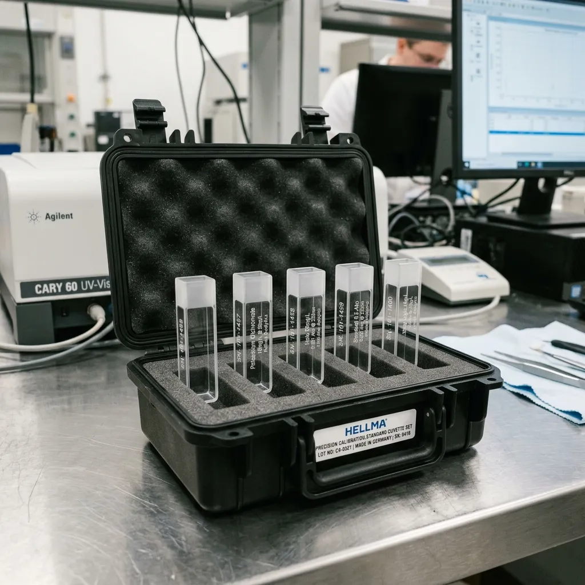

Filter catalog items by path length, sample volume, and maximum pressure rating.
Our micro-bore spectrophotometer cuvettes are designed for low-volume biological sample analysis. Constructed with black quartz self-masking walls, these cuvettes eliminate stray light, preventing background scattering and ensuring highest signal-to-noise ratio during sensitive fluorescence measurements.
Each unit features precision polished windows optimized for ultra-violet transmission without aperture distortion.
| SKU | Path Length (mm) | Aperture | Unit Price | Stock | Action |
|---|---|---|---|---|---|
| NQ-MB-010 | 10.00 | 2 x 5 mm (10µL) | € 140.00 | [ IN STOCK ] | |
| NQ-MB-025 | 10.00 | 2 x 12.5 mm (25µL) | € 160.00 | [ IN STOCK ] | |
| NQ-MB-050 | 10.00 | 2 x 25 mm (50µL) | € 195.00 | [ IN STOCK ] | |
| NQ-MB-100 | 10.00 | 2 x 50 mm (100µL) | € 280.00 | [ IN STOCK ] |
Specialized optical cells engineered for underwater submersibles, ROV spectroscopy, and deep-ocean hydrothermal vent monitoring. Featuring a Titanium Grade-5 outer sleeve and sapphire window options, these high-pressure cells interface seamlessly with standard HPLC connections.
Safety is paramount in abyssal deployment. Each cell features a burst pressure safety margin of 2.5x the rated limit, ensuring instrument survival even during extreme hydrostatic transients.

| SKU | Pressure Rating | Sleeve Material | Connections | Action |
|---|---|---|---|---|
| NQ-HP-200 | 200 Bar | Titanium Grade-5 | 1/16" HPLC | |
| NQ-HP-400 | 400 Bar | Titanium Grade-5 | 1/16" HPLC | |
| NQ-HP-600 | 600 Bar | Titanium Grade-5 | 1/8" High-Flow |
Rigorous QA compliance on oceanographic cruises requires verified metrology. Our calibration sets provide reference points for checking spectrophotometric wavelength accuracy and stray light performance. Sealed quartz construction ensures 24 months of calibration validity.

In addition to our standard lines, we offer specialized optical fabrication for custom oceanographic optical benches. Provide us with your target specifications below.
Custom production lead times typically range from 14 business days following engineering drawing approval.
International oceanographic buyers rely on smooth customs handling for vessel resupply. We coordinate directly with port agents to ensure swift delivery of optical cargo.
| Service Level | Transit Time | Clearance Handling |
|---|---|---|
| Portside Urgent Courier | 12-24 Hours (EU Hubs) | Pre-cleared Port Authority Transfer |
| Air Freight Expedited | 48-72 Hours (Global) | Commercial Invoice & Duty Prepaid |
| Dangerous Goods Compliant | Varies by Route | UN-Certified packaging for solvent kits |
URGENT LOGISTICS SUPPORT: +49 (0)431 555-0199 | logistics@nadir-quartzware.com